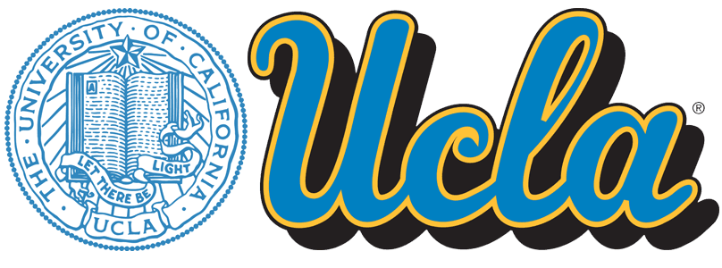

About Me
Hi, my name is Wilmer Amaya-Mejia. I am an avian disease ecologist. My work applies ecological, genetic, and evolutionary concepts to understand the interaction between diseases and birds, from a community to an individual scale.
Outside of my main research focus, I aim to improve diversity, equity, inclusion, and retention within academia. My community-based initiatives focus on supporting students from elementary school, undergraduate programs, and graduate programs.
I obtained my Bachelor's degree from Virginia Commonwealth University with a focus on ecology. Afterward, I worked as a lab technician in the Corey Lab developing many of my wet lab skills and delving into genetics research using zebrafish models.
In 2018, I joined the Sehgal lab where I began studying avian diseases, focusing on malaria. I graduated in 2020 with my Master's degree from San Francisco State University.
Beginning in 2020, I have started my doctoral degree at the University of California, Los Angeles (UCLA). Much of my current research focuses on urban disease systems throughout California but has expanded to examine epigenetic and the microbiome of birds within a disease framework.

